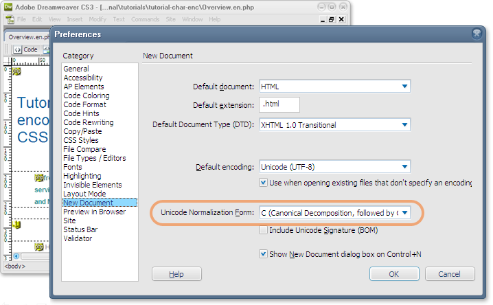

Answer
Нормалізація - те, про що ви повинні знати, якщо ви розробляєте HTML сторінки з таблицями стилів CSS в UTF-8 (або в будь-якому іншому кодуванні Unicode), особливо якщо ви маєте справу зі скриптом, який в тексті використовує наголоси або інші діакритичні знаки.
Які є форми нормалізації?
В Unicode можливо показувати той самий текст з різними послідовностями символів. Наприклад, візьмемо угорське слово világ. Четверта літера може зберігатися в пам'яті як складена U+00E1 МАЛЕНЬКА ЛАТИНСЬКА ЛІТЕРА A З НАГОЛОСОМ (один символ) або як розкладена послідовність U+0061 МАЛЕНЬКА ЛАТИНСЬКА ЛІТЕРА A за якою слідує U+0301 НАГОЛОС (два символи).

Стандарт Unicode дозволяє будь-яку з цих альтернатив, але вимагає, щоб обидві розглядалися як ідентичні. Для підвищення ефективності, додаток, як правило, нормалізує текст, перш ніж виконувати пошук або порівняння. Нормалізація, в цьому випадку, означає перетворення тексту використовуючи всі складені або всі розкладені символи.
Є чотири форми нормалізації зазначені стандартом Unicode: NFC, NFD, NFKC і NFKD. C означає складені, і D означає розкладені. K означає сумісність. Для поліпшення сумісності, W3C рекомендує використовувати NFC нормалізований текст на Веб сторінках.
Що мені потрібно знати про нормалізацію?
На жаль, нормалізація не завжди використовується до порівняння контенту. Особливо важливим є використання селекторів і імен класів або ідентифікаторів в HTML і CSS. Якщо слово világ використовується в складеній формі в HTML (наприклад <span class="világ">), але у розкладеній формі в CSS (наприклад .világ { font-style: italic; }), то потім селектор не буде відповідати імені класу.
Це означає, що при створенні контенту ви повинні переконатися, що селектори і клас або ідентифікатори такі самі символ-до-символу. Це особливо ймовірно тоді, коли розмітка і CSS розробляються або обслуговуються різними людьми.
Кращий спосіб переконатися, у відповідності - використовувати одну окрему форму Unicode нормалізації для всього контенту, що розробляється. Як ми вже говорили вище, W3C рекомендує NFC.
Більшість клавіатур для європейських мов уже виводять текст в NFC, але це менш імовірно у випадку, якщо ви маєте справу з багатьма неєвропейськими мовами.
У деяких випадках ваш редактор може дозволити вам зберегти дані у формі нормалізації на вибір. На зображенні нижче показаний варіант для створення особливої форми нормалізації за замовчуванням при відкритті нових файлів в Dreamweaver (вибрана NFC). Вам показаний подібний вибір при збереженні документу.

Як я можу перевірити сторінки на наявність помилок?
Ви можете з'ясувати чи сторінки HTML містять імена класів і ідентифікатори, які не нормується відповідно до NFC, використовуючи Контролер W3C Інтернаціоналізації.
Якщо у вас є проблеми, ви повинні знайти редактор або інструмент для перетворення, який дозволяє вказати форму нормалізації, і використовувати його для повторного збереження сторінки.